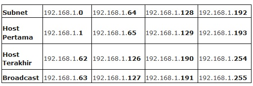

Subnetting adalah proses memecah suatu IP jaringan ke sub jaringan yang lebih kecil yang disebut "subnet" Subnetting digunakan untuk memudahkan pengelola jaringan komputer (system Administrator, Network Administrator, maupun pengguna biasa) dalam mengelola jaringan, melakukan alokasi IP Address untuk setiap ruangan dan gedung sesuai dengan kebutuhan. Proses subnetting sendiri dilakukan dengan menggunakan nilai CIDR seperti yang disebutkan sebelumnya.
CIDR (Classless Inter Domain Routing)
CIDR atau Classless Inter Domain Routing merupakan sebuah proses sebagai solusi untuk mengefisiensi dalam pengalamatan alokasi IP Address yang dilakukan pada pengkelasan IP Address yang ada. Berikut adalah table CIDR untuk keperluan Subnetting :
 Subnetting IP Address Kelas C
Subnetting IP Address Kelas C
Subnetting IP Address kelas C merupakan kelas subnetting yang paling mudah, karena IP Address kelas C hanya memiliki Host ID (Alamat Host) pada bagian terakhir IP Addressnya. Contoh IP Address 192.168.2.1 maka angka 1 pada digit terakhir adalah yang dimaksud dengan Host ID, sedangkan 3 blok angka sebelumnya adalah Net ID atau Network ID (Alamat Jaringan).
Langsung ke tahap perhitungannya, sebagai contoh, kita menganalisa IP Address 192.168.1.0/26 atau dapat ditulis dengan 192.168.1.0 netmask 255.255.255.192 yang berarti IP Address tersebut memakai prefix length /26 pada tabel CIDR. Langkah pertama adalah merubah angka prefix tersebut menjadi 32 bit bilangan biner (IPv4 berjumlah 32 bit), maka akan menjadi 11111111.11111111.11111111.11000000 (tulis angka 1 sebanyak 26 kali dengan pemisahan 8 digit, kemudian setelah mencapai 26, untuk memenuhi 32 bit maka isi angka 0). Setelah itu rubah 32 bit bilangan biner tersebut kedalam bentuk decimal, maka akan diperoleh angka 255.255.255.192 . Subnetting sendiri akan terfokus kedalam 4 hal, diantaranya :
- Jumlah Subnet = 2x , dimana x adalah banyaknya binari 1 pada oktet terakhir subnet mask (2 oktet terakhir untuk kelas B, dan 3 oktet terakhir untuk kelas A). Jadi Jumlah Subnet adalah 22 = 4 subnet.
- B. Jumlah Host Per Subnet = 2y - 2, dimana y adalah adalah kebalikan dari x yaitu banyaknya binari 0 pada oktet terakhir subnet.
Jadi jumlah host per subnet adalah 26 - 2 = 62 host.
- Blok Subnet = 256 - 192 (nilai oktet terakhir subnet mask) = 64. Subnet berikutnya adalah 64 + 64 = 128, dan 128+64=192. Jadi subnet lengkapnya adalah 0, 64, 128, 192
- >Keterangan Untuk Tiap subnetnya, data atau alokasi tiap subnet akan disajikan dalam bentuk tabel :

Subnetting IP Address Kelas B
Subnetting IP Address kelas B hampir sama dengan kelas C, hanya saja kelas B memiliki Net ID pada 2 oktet pertama dan Host ID pada 2 oktet terakhir IP Address. Langsung saja kepada contoh kasusnya, IP Address 172.16.0.0/18 dirubah menjadi 32 bit bilangan biner untuk prefixnya menjadi 11111111.11111111.11000000.00000000 lalu dirubah kedalam bilangan desimal menjadi 255.255.192.0 . dapat dihitung menjadi beberapa subnet dan host :
- Jumlah Subnet = 2x, dimana x adalah banyaknya binari 1 pada 2 oktet terakhir. Jadi Jumlah Subnet adalah 22 = 4 subnet.
- Jumlah Host per Subnet = 2y - 2, dimana y adalah adalah kebalikan dari x yaitu banyaknya binari 0 pada 2 oktet terakhir. Jadi jumlah host per subnet adalah 214 - 2 = 16.382 host.
- Blok Subnet = 256 - 192 = 64. Subnet berikutnya adalah 64 + 64 = 128, dan 128+64=192. Jadi subnet lengkapnya adalah 0, 64, 128, 192 .
- Keterangan Untuk Tiap subnetnya :

Subnetting IP Address Kelas A
Selanjutnya untuk Subnetting kelas A karena peruntukan daya tampung alokasi IP Address yang banyak, maka IP kelas A memiliki Net ID pada oktet pertama, dan Host ID pada 3 oktet terakhir. Untuk contoh kasusnya misalkan IP Address 10.0.0.0/16 . maka jika dirubah menjadi subnet mask 32 bit bilangan biner akan menjadi 11111111.11111111.00000000.00000000 setelah itu dirubah kedalam bentuk desimal akan menjadi 255.255.0.0

 Perbedaan Jaringan 3G dan 4G
Perbedaan Jaringan 3G dan 4G
 Jumlah Core dan Hubungannya dengan
Jumlah Core dan Hubungannya dengan Cara Mengatur Layar di Windows Saat
Cara Mengatur Layar di Windows Saat Pengertian dan Cara Defrag/Defragment
Pengertian dan Cara Defrag/Defragment  Macam macam file audio dan
Macam macam file audio dan  Apa itu Extreme Programming ?
Apa itu Extreme Programming ?